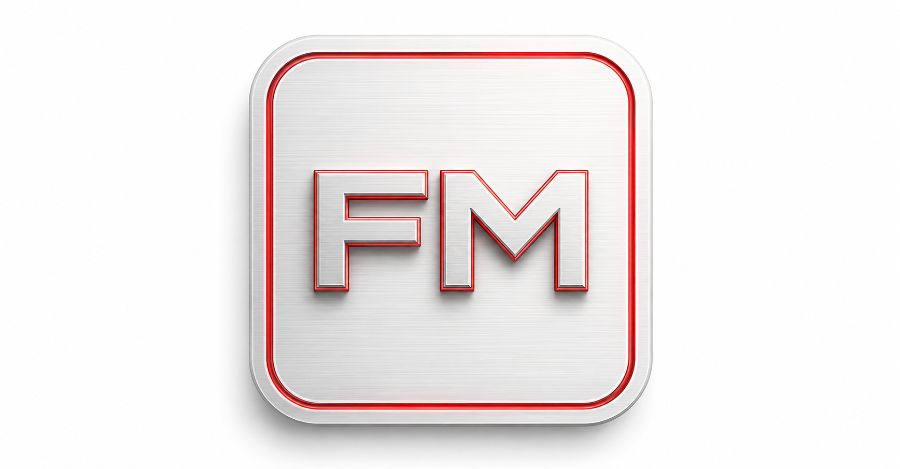
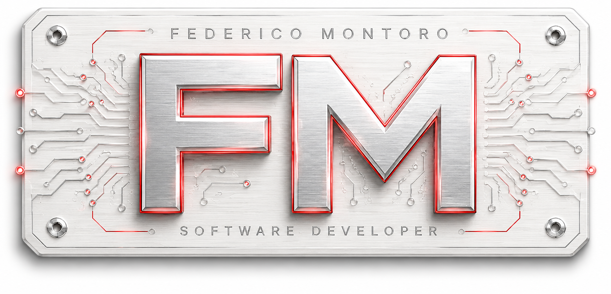
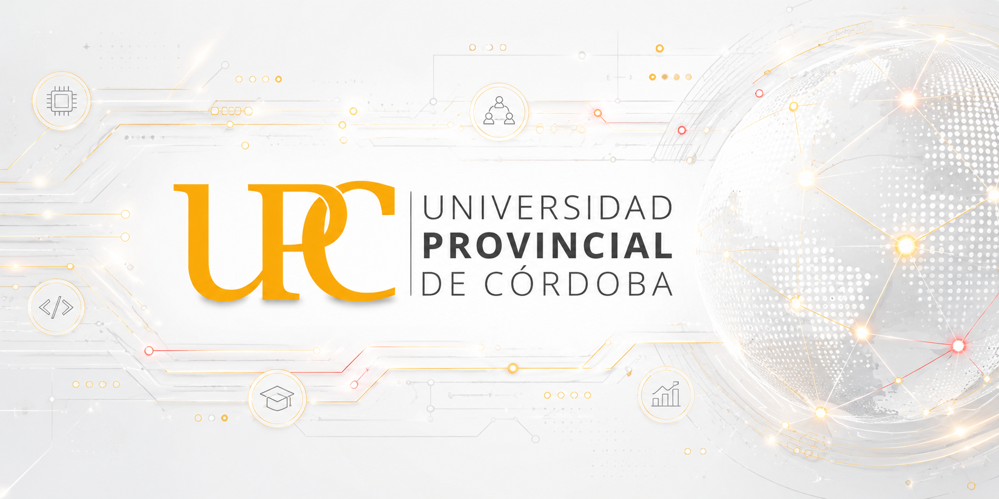
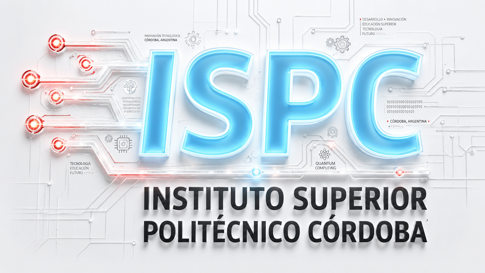

Formación
UPC · ISPC · UNC

fedemontoro.com.ar
Junior Software Developer
Backend · Full-Stack · Procesos y análisis operativo
Trayectoria, formación y propósito
Mi nombre es Federico Montoro, tengo 43 años y soy estudiante y entusiasta de la programación. Comencé mi formación profesional a principios de 2025 en la sede Capilla del Monte de la Universidad Provincial de Córdoba, cursando la Tecnicatura Universitaria en Programación Full Stack.
En 2026 amplié mi desarrollo académico incorporando la Tecnicatura Superior en Desarrollo de Software del Instituto Superior Politécnico Córdoba, complementando mi formación con cursos y certificaciones dictados por distintas instituciones, entre ellas la Universidad Nacional de Córdoba.
Antes de ingresar al mundo del desarrollo construí una extensa trayectoria en atención al cliente, procesos comerciales y análisis operativo. Esa experiencia me permitió desarrollar habilidades de comunicación, resolución de problemas y orientación a resultados que hoy aplico en cada proyecto tecnológico.
Me interesa crear soluciones digitales simples, útiles y centradas en las personas. Disfruto aprender, trabajar en equipo y transformar ideas en herramientas que generen valor real para quienes las utilizan.
Actualmente continúo formándome de manera constante, combinando mis estudios académicos con proyectos personales, experiencias prácticas y el desarrollo de iniciativas como FreToKa Lab, donde exploro tecnologías, metodologías y soluciones orientadas al mundo real.
UPC · ISPC · UNC
Atención al cliente · Comercial · Operaciones
HTML · CSS · JavaScript · TypeScript · SQL · PostgreSQL
FreToKa Lab · EGYEN · TurnIA · SOS Alarma ComunitarIA
Perfil profesional
Laboratorio FreToKa
Laboratorio digital donde desarrollo soluciones para PyMEs: websites, digitalización documental, herramientas internas y automatización.
Entrar al laboratorioProyectos
Laboratorio digital para crear websites, herramientas internas y automatizaciones para PyMEs.
Web · Procesos · Automatizacion
Ver demoConcepto de gestion inteligente de turnos y asistencia para servicios con atencion al publico.
Backend · Datos · UX
PróximamenteIdea de alerta comunitaria orientada a comunicacion rapida, coordinacion barrial y soporte digital.
JavaScript · Alertas · Comunidad
PróximamenteExploracion de herramientas asistidas por IA para ordenar informacion, decisiones y flujos simples.
IA · Web · Productividad
PróximamenteEspacio reservado para nuevas soluciones, prototipos y experimentos profesionales.
Roadmap · Prototipos
PróximamenteAprendizaje continuo en desarrollo de software y tecnología.

Tecnicatura Superior en Programación Full Stack
Explorar proyectos UPC
Tecnicatura Superior en Desarrollo de Software
Explorar proyectos ISPCTrabajos académicos enfocados en comunicación, argumentación y producción profesional.
UPC · Comunicación
PróximamenteNuevas entregas y materiales académicos de la trayectoria UPC.
UPC · Roadmap
PróximamenteAnálisis de organizaciones, procesos y sistemas desde una mirada técnica y operativa.
ISPC · Procesos
Próximamente Ver trabajo prácticoModelado, consultas SQL y fundamentos para administrar informacion de forma consistente.
SQL · Datos
PróximamentePrácticas de desarrollo frontend y backend para construir interfaces y aplicaciones web.
HTML · CSS · JS
PróximamenteRepositorio abierto para nuevas materias, entregas y proyectos de formacion.
ISPC · Roadmap
Próximamente